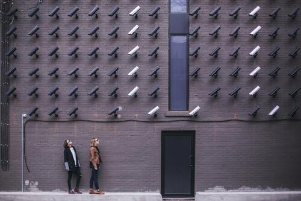
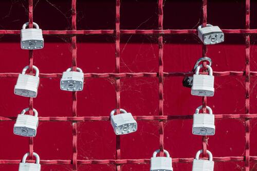
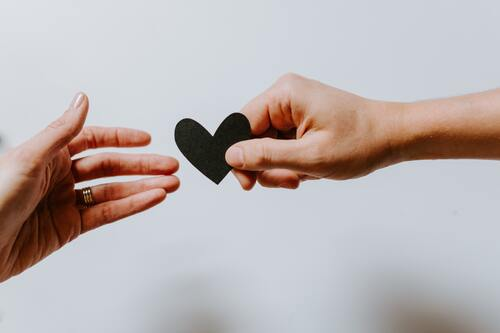
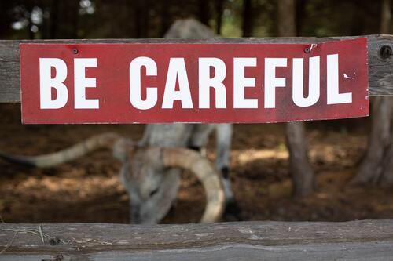
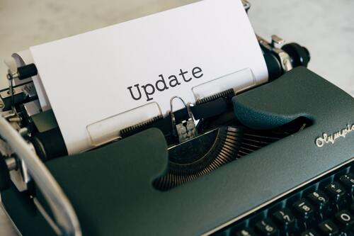
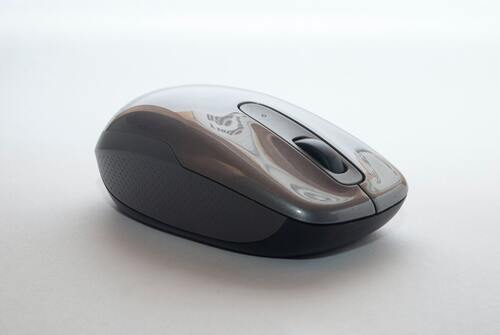

Meer denken, beter gebruiken
Met de opkomst van het internet en sociale media is het belangrijker dan ooit om verstandig om te gaan met sociale media en de omnipresente technologie. Ik deel graag een aantal praktische tips om je online en in een almaar meer technologische wereld op een verantwoorde manier te gedragen.
1. Wees bewust van je privacy-instellingen op sociale media
Voordat je begint met het delen van persoonlijke informatie op sociale media, is het belangrijk om te begrijpen hoe je privacy-instellingen werken en wat je kunt beschermen. Ga door je instellingen heen en zet ze in zoals je ze wilt hebben, en let erop dat je niet te veel informatie openbaar maakt.
2. Wees kritisch over de media die je deelt en bekijkt
Niet alles wat je online leest, is waar. Wees kritisch en doe altijd onderzoek voordat je iets deelt. Zorg ervoor dat de bron betrouwbaar is en verifieer informatie voordat je het deelt met anderen.
3. Bescherm je sociale media accounts
Gebruik sterk wachtwoorden en verander ze regelmatig, zet two-factor authenticatie steeds aan en zorg ervoor dat je geen persoonlijke informatie deelt die kan worden gebruikt om in te loggen op je account. Neem zeker eens een kijkje naar wachtwoord managers die je leven gemakkelijker kunnen maken!
Wil je kijken of jouw account al in data-lekken voorkwam? Surf dan even naar Have I Been Pwnd.
4. Wees terughoudend met het delen van persoonlijke informatie
Bescherm je identiteit en privacy door bewust te zijn van wat je online deelt. Denk na over hoe je informatie zou kunnen worden gebruikt en deel niet te veel persoonlijke informatie, zoals je adres, telefoonnummer en financiële informatie.
5. Wees voorzichtig met het downloaden van apps en software
Download alleen apps en software van betrouwbare bronnen en lees altijd de beleid en gebruikersvoorwaarden voordat je iets installeert. Let op voor verdachte of onbekende apps die toegang vragen tot je persoonlijke informatie of je telefoon of computer beschadigen.
6. Zet automatische updates aan
Software- en beveiligingsupdates bevatten belangrijke verbeteringen die je apparaat beschermen tegen kwetsbaarheden en beveiligingslekken. Zet automatische updates aan zodat je altijd de nieuwste versie hebt.
7. Wees voorzichtig met het klikken op links in e-mails
Phishing-e-mails zijn gericht op het verkrijgen van je persoonlijke informatie, zoals wachtwoorden en financiële gegevens. Wees voorzichtig met het klikken op links in onbekende of verdachte e-mails, zelfs als ze er legitiem uitzien. Controleer altijd de afzender en de URL voordat je op een link klikt.
8. Maak backups
Het maken van backups is een van de belangrijkste stappen om je gegevens en informatie te beschermen. Backups zorgen ervoor dat je gegevens beschikbaar zijn en veilig zijn, zelfs als je apparaat wordt gestolen, verloren gaat of kapot gaat.
In conclusie is het belangrijk om verstandig om te gaan met online gedrag en technologie. Deze tips kunnen je helpen om je privacy te beschermen en verantwoord om te gaan met de informatie die je online deelt. Blijf op de hoogte van de nieuwste ontwikkelingen en best practices en blijf oplettend om te voorkomen dat je online identiteit of informatie in gevaar komt.
© 2023, Manu De Buck, we are
© images from unsplash.com